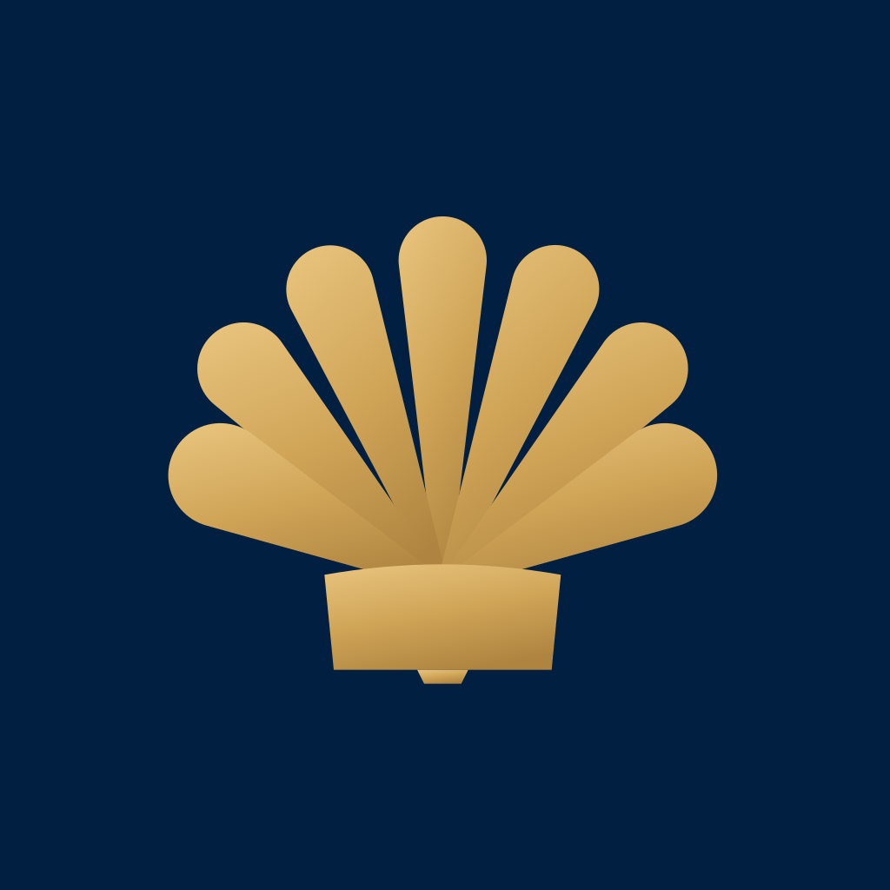

OnCamino
OnCamino needs a connection the first time it opens, to load the map and save it for walking offline. Please connect to Wi-Fi or mobile data and try again.

OnCamino needs a connection the first time it opens, to load the map and save it for walking offline. Please connect to Wi-Fi or mobile data and try again.